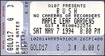

|
May 7, 1994 Maple Leaf Gardens. Toronto, ONT
| ||||

The Toronto Globe & Mail
May 9, 1994
Nose to the grindstone
Rush dispensed with frills and gave a practical, nuts and bolts performance
Saturday night at Maple Leaf Gardens to a full house.
by Alan Niester
It was entirely apropos that the stage setup for Rush's appearance at Maple Leaf Gardens Saturday night was decorated in a nuts and bolts motif. After all, such hardware decorates the cover of the band's latest Counterparts album. But even more importantly, the performance the hometown heroes put on for a full house here was just that -- nuts and bolts, nose to the grindstone, practical as all get out, with nary an extraneous frill to be heard.
Once the large, animated graphic of a bolt floating through space (to the strains of "Thus Spake Zarathustra", no less) had been dispensed with, the trio kicked immediately into a stripped down version of "Dreamline," the opening cut from the Roll The Bones album.
Although Rush has never really been considered a classic power trio (traditionally the band has been linked more with the progressive movement) Saturday's performance centred on the interplay between Alex Lifeson's guitar lines, Geddy Lee's bass playing and Neil Peart's drums. While a keyboard was indeed set up stage left, Lee only approached it a few times all evening. And Lifeson was much more likely to wander out to the front of the stage to play riffy electric lead guitar lines than he was to add intricate acoustic passages on a fixed and standing acoustic guitar positioned near the corner of the stage.
Indeed, most numbers that required the extra keyboards were simply left out of the set list altogether, as Rush concentrated on numbers best suited for the guitar/bass/drums attack. "Dreamline" led into classic FM radio hits like "Spirit Of Radio," "Time Stand Still" and "Roll The Bones." Anything more complex was presumably saved for next year's MLG visit.
All of this, of course, was in keeping with the tendency displayed on last year's Counterparts album. That release was an obvious "back to the basics" album, an attempt to bring the veteran band back into line with the guitar-dominated nineties. Thus, newer numbers performed Saturday, like the thought-provoking "Animate" ("polarize me, sensitize me, criticize me, civilize me"), "Stick It Out," "Cold Fire" and "Double Agent" fit perfectly into this retrograde approach.
Hard rockers, I Mother Earth opened the show, but the young quintet could have learned a lot by sticking around for the headliners. As Rush has showed over the years, loud doesn't necessarily mean thundering and bombastic. It is possible to integrate melody and nuance into a performance while still nudging 100 decibels.